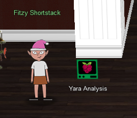
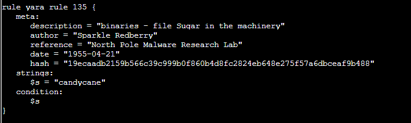
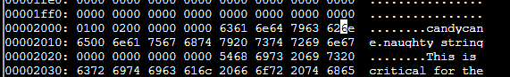
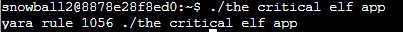
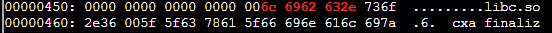
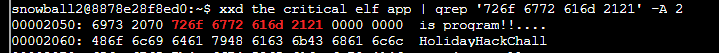
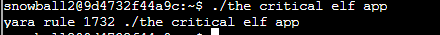
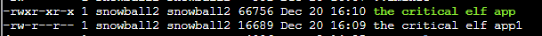
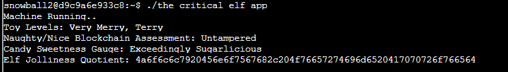

Yara Analysis

Details
- Location: KringleCon/Entry
- Elf: Fitzy Shortstack
Elf's Objective Message
Hiya, I'm Fitzy Shortstack! I was just trying to learn a bit more about YARA with this here Cranberry Pi terminal. I mean, I'm not saying I'm worried about attack threats from that other con next door, but... OK. I AM worried. I've been thinking a bit about how malware might bypass YARA rules. If you can help me solve the issue in this terminal, I’ll understand YARA so much better! Would you please check it out so I can learn? And, I’ll tell you what – if you help me with YARA, I’ll give you some tips for Splunk! I think if you make small, innocuous changes to the executable, you can get it to run in spite of the YARA rules.
This terminal is located in Entry at KringoleCon. Solving this terminal challenge provides additional hints for objective 9. To view the hints for this terminal challenge use the menu on the left.
To solve this terminal challenge you will need to modify ./the_critical_elf_app enough to bypass yara.
Run the application you will see the following error message:
The above message indicates yara rule 135 is being trigered. The yara rules are located in folder ./yara_rules/rules.yar. Use the command egrep 'yara_rule_135 ' yara_rules/rules.yar -A 12 to view rule 135.

Editting Binary file
To edit a binary file:
-
Open the binary file normally with vim vim
-
Convert them to xxd human-readable format :%!xxd
-
Edit the hex part in the left
-
Convert xxd-human readable format back to binary :%!xxd -r
-
Save modified content :w
Rule 135 is being triggered on the candycane string in ./the_critical_elf_app.
Run vim ./the_critical_elf_app
Type :%!xxd
Change the byte at 0x200E from 61 to 62. It will look something like this:

Save the new file by entering :w in vim.
Re-run ./the_critical_elf_app.
Answer to bypass rule 135
Change the byte at 0x200E from 61 to 62
The above modifcation will bypass Yara rule 135, however a new rule is now being triggered.

From the above results, you can see Rule 1056 is being triggered.
Use this command to read the corresponding yara rule, egrep 'yara_rule_1056 ' yara_rules/rules.yar -A 12.
This rule is looking for two series of hex values in the file. You can use xxd and grep to find where these matches are in the_critical_elf_app.
Running xxd the_critical_elf_app | grep '6c 6962 632e' -A 2 will show:

This is being triggered on part of the file that can't be changed as it's a library name.
Running xxd the_critical_elf_app | grep '726f 6772 616d 2121' -A 2 will show:

You can change the string "is program!!". Using the same above instructions, change the byte at 0x2054 from 72 to 73 to bypass this rule.
Answer to bypass rule 1056
Change the byte at 0x2054 from 72 to 73
Re-run the the_critical_elf_app program. The results are shown below:

Yara Rule 1732 is now being triggered. Use egrep 'yara_rule_1732 ' yara_rules/rules.yar -A 32 to read this rule.
rule yara_rule_1732 {
meta:
description = "binaries - alwayz_winter.exe"
author = "Santa"
reference = "North Pole Malware Research Lab"
date = "1955-04-22"
hash = "c1e31a539898aab18f483d9e7b3c698ea45799e78bddc919a7dbebb1b40193a8"
strings:
$s1 = "This is critical for the execution of this program!!" fullword ascii
$s2 = "__frame_dummy_init_array_entry" fullword ascii
$s3 = ".note.gnu.property" fullword ascii
$s4 = ".eh_frame_hdr" fullword ascii
$s5 = "__FRAME_END__" fullword ascii
$s6 = "__GNU_EH_FRAME_HDR" fullword ascii
$s7 = "frame_dummy" fullword ascii
$s8 = ".note.gnu.build-id" fullword ascii
$s9 = "completed.8060" fullword ascii
$s10 = "_IO_stdin_used" fullword ascii
$s11 = ".note.ABI-tag" fullword ascii
$s12 = "naughty string" fullword ascii
$s13 = "dastardly string" fullword ascii
$s14 = "__do_global_dtors_aux_fini_array_entry" fullword ascii
$s15 = "__libc_start_main@@GLIBC_2.2.5" fullword ascii
$s16 = "GLIBC_2.2.5" fullword ascii
$s17 = "its_a_holly_jolly_variable" fullword ascii
$s18 = "__cxa_finalize" fullword ascii
$s19 = "HolidayHackChallenge{NotReallyAFlag}" fullword ascii
$s20 = "__libc_csu_init" fullword ascii
condition:
uint32(1) == 0x02464c45 and filesize < 50KB and
10 of them
}
This rule is matching on the header of the file, if the filesize is less than 50KB. Use these commands to append the file to become greater than 50KB.
Answer to bypass rule 1732
~$ cat ./the_critical_elf_app >> ./the_critical_elf_app1
~$ cat ./the_critical_elf_app1 >> ./the_critical_elf_app
~$ cat ./the_critical_elf_app1 >> ./the_critical_elf_app
~$ cat ./the_critical_elf_app1 >> ./the_critical_elf_app
This will make the file 66.8KB as shown below:

Run the newly created file to see the final results:
